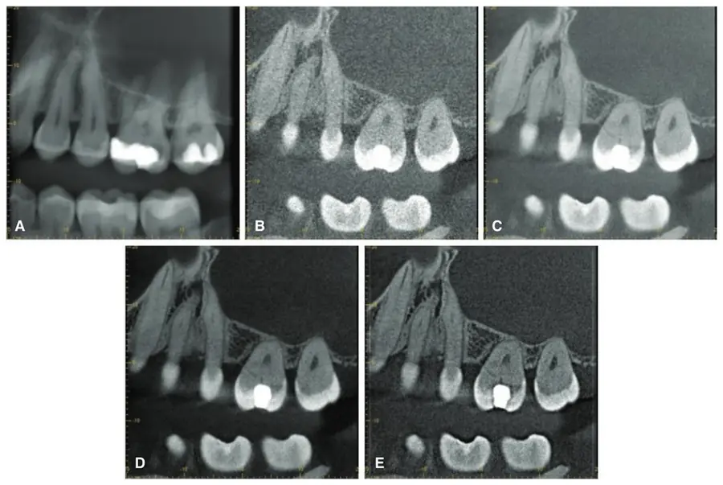
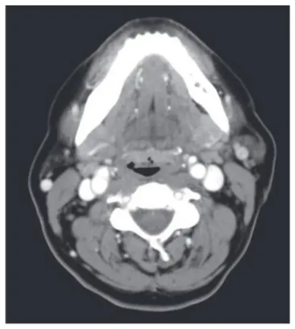

نسخه استخراجشده؛ ترجمه یا تأیید علمی انجام نشده است. وضعیت: captured
هر وکسل یک مقدار خاکستری میدهد که «مستقیماً با ضریب تضعیف خطی محاسبهشدهی آن بافت متناظر است». در MDCT این مقادیر عدد CT نامیده میشوند و بر مقیاسی از واحدهای قراردادی — واحد هانسفیلد (HU)، به افتخار گادفری هانسفیلد — بیان میگردند.

و دو لنگر ثابت مقیاس: آب = صفر، هوا = −۱۰۰۰.
و فرمولش:
HU = ۱۰۰۰ × (μ − μآب) ÷ μآب
که در آن μ ضریب تضعیف خطی است. و توجه کن: «HU یک واحد SI نیست و بدون بُعد است.»
و انتهای بالای مقیاس ثابت نیست — با عمق بیت تعیین میشود: «معاینات CT با تصاویر ۱۲ بیتی، مقیاسی میدهند با هوا در −۱۰۲۴ و حد بالای ۳۰۷۱. با تصاویر ۱۶ بیتی، دامنهی بالا به ۶۴٬۵۱۱ افزایش مییابد.» و دامنهی نمایش معمول تصویر مقطعی: «از −۱۰۰۰ تا +۳۰۰۰ HU».
| بافت | واحد هانسفیلد |
|---|---|
| مینا | +۱۵۰۰ تا +۳۰۰۰ |
| استخوان | +۱۰۰۰ تا +۳۰۰۰ (کورتیکال)، +۱۵۰ تا +۶۰۰ (کانسلوس) |
| عضله | +۲۰ تا +۱۴۰ |
| خون لختهشده | +۱۳ تا +۳۰ (مایع)، +۵۰ تا +۷۵ (خونریزی)، +۴ تا +۹۰ (هماتوم) |
| مغز | +۲۵ (مادهی سفید)، +۴۰ (مادهی خاکستری) |
| چرک | ۰ تا +۴۵ |
| مایع مغزی-نخاعی | +۱۵ |
| آب | ۰ |
| چربی | −۵۰ تا −۲۰۰ |
| ریه | −۶۰۰ تا −۸۰۰ |
| هوا | −۱۰۰۰ |
و قاعدهی نمایش: «مقادیر HU بالاتر بهصورت سایههای روشنتر خاکستری، و مقادیر پایینتر بهصورت سایههای تیرهتر دیده میشوند.» پس استخوان کورتیکال و فلز، عدد CT بالا میدهند.
جز آب و هوا که مقادیر ثابتی روی مقیاس دارند، عدد CT هر ماده با سه چیز تغییر میکند: عدد اتمی مؤثر، چگالی فیزیکی، و انرژی پرتو.

و اثر انرژی جهت مشخصی دارد: «وقتی انرژی پرتو (kVp) افزایش یابد، اعداد CT کاهش مییابند — بهویژه برای بافتهای با عدد اتمی مؤثر بالا مانند مینا، عاج و استخوان.»
و حالا مهمترین هشدار عملی این درس: «مقادیر شدت خاکستری تعیینشده از تصاویر CBCT، نشانگرهای کماعتمادتری از تضعیف بافت هستند.»
و چهار دلیلش:
و یک لایهی دشواری افزوده: «برخلاف MDCT، تصویربرداری CBCT بر جزئیات بافت سخت متمرکز است. تضعیف در این بافتهای با عدد اتمی بالا بهشدت وابسته به انرژی است، و اندازهگیری این بافتها برای استنتاج چگالی مواد معدنی بافت غیرقابل اعتماد است.»
و هشدار پایانی، صریح: «بسیاری از سازندگان امکان اندازهگیری «HU» درون تصویر CBCT را فراهم میکنند، و کاربران باید محدودیتهای استفاده از این مقادیر کمّی را در تصمیمگیری بالینی بشناسند.» پس عددی که دستگاه CBCT نشان میدهد، یک HU واقعی نیست.